Balingsta
<div style="width: 355; float: right; margin-left: 10px; padding: 3px; border: solid 1px #cccccc;">
<googlemap lat="59.204328" lon="18.02247" zoom="13" type="karta">
59.201295,18.032137,Kvarnen
59.208776, 18.023458,Vägsektorn
59.207376, 18.020458,Bergsektorn
59.205576, 18.023458,Ängssektorn
59.212930,18.021200,Hundsektorn
</googlemap>
</div>
Allmänt
Balingsta ligger i Orlångens naturreservat. På vänstra sidan om vägen finner du en sektor, på högra sidan finner du tre sektorer och längre fram vid vägs ände hittar du den femte sektorn i lövskogen vid ängarna nere vid sjön. Stenen kan på vissa problem vara lite lös. Alla problem är utmärkta med en vit pil.
Vägbeskrivning
Från Stockholms centrum tar du Huddingevägen (226), svänger av på Lännavägen (259), kör ca 1 km efter att du passerat Balingsnäs, sväng av vänster (skyltat
Balingsta Gård
) på en grusväg med en lång gammal allé. Kör vidare ca 950 m, på vänster sida finns ett par parkeringsfickor och ca 200 m längre fram ytterligare ett par till.
För att komma till Kvarnen kör du ytterligare några hundra meter och ställer bilen på den stora parkeringen på höger sida före stallen. Gå förbi stallen, runda ridhuset och följ vägen bakom bommen, över åkrarna, tills du är framme.
Access
Området ligger, som nämnts, i Orlångens naturreservat med allt vad det innebär. Var extremt noga med att ta med dig allt skräp och visa hänsyn till naturen och andra besökare.
Obs. bara en varning myggtätt som attans vissa dagar. annars jättebra ställe
Förare
Hundsektorn
Sektorn ligger på motstående sida om vägen där du hittar de övriga sektorerna (vänster sida av vägen när du åker dit). Följ stigen längs ängskanten, vid stigens början står det en skylt "Förbjudet att rida". Gå ca 150 m tills dess att du ser ett kluvet block, framme!
{|
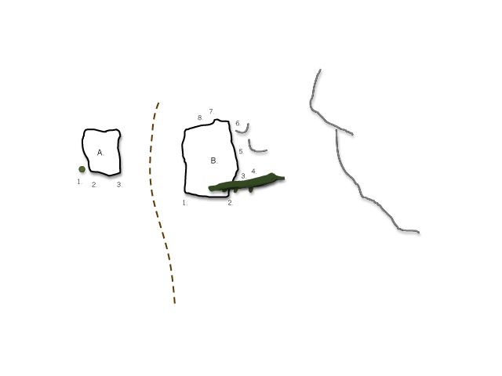
- A:1
- Idefix
- 5
- Klättra längs kanten och väggen upp.
- A:2
- Lassie
- 6A
- Skicka till den stora juggen, klättra via krimpers upp, skicka till kanten.
- A:3
- Pluto
- 6B+
- Problemet går från höger till vänster under mosskanten, upp där "Lassie" slutar.
- B:1
- Zeke
- 6A+
- Klättra via kanten upp, endast händerna på kanten.
- B:2
- Laica
- 5
- Starta i den högra kanten, "campusera" eller klättra vidare till vänster och upp.
- B:3
- Snobben
- 5-
- Bakom trädet, rakt upp.
- B:4
- Milou
- 6A+
- Låg start, klättra höger och upp, känslig klättring.
- B:5
- Cujo
- 6B
- Går lite snett höger, akta ryggen!
- B:6
- Båtsman
- L
- Klättra till vänster längs stenens kant.
- B:7
- Devil
- 7A+
- Låg start, ansträngande klättring till vänster, upp via crimpers.
- B:8
- Baskervilles hund
- L
- Klättra rakt upp under den Matterhorn-liknande spetsen.
Vägsektorn 1
Perkera förslagsvis på den sista perkeringen innan fältet (på höger sida) börjar. Gå sedan bakåt ca 100m och in i skogen till vänster (högra sidan av vägen när du åker in alltså). Det finns någon sorts stig en bit in, som kan vara svår att hitta första gången.
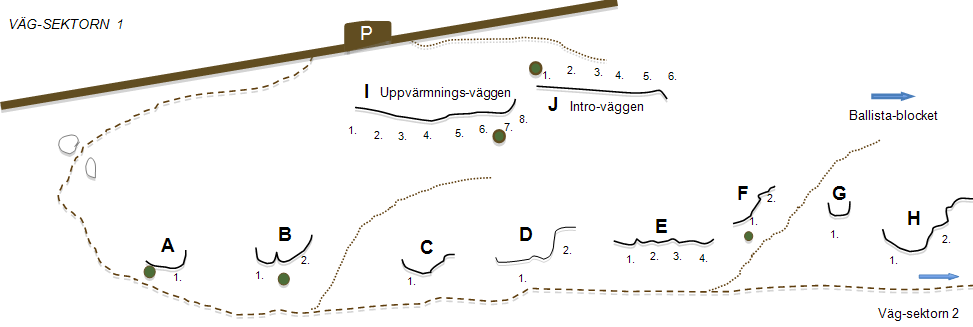
- A:1
- Krystad
- 6A
- Krystat och lågt problem, jobba dig till höger och upp.
- B:1
- Fjutt
- L
- Ta tag i det du når och rakt upp.
- B:2
- Öl med bröd
- 6A+
- Avslutande hylla för fjutt är ej med.
- C:1
- Prince Eugen
- 5-
- Rakt upp, blir lite svårare högre upp.
- D:1
- Gubben Salvius
- 6A
- Svårigheten är startmovet.
- D:2
- Zeb
- 6A
- Rakt upp, HH på bra lister.
- E:1
- Laura
- L
- Startar i undercling, gåtill vänster, slutar i grepp under mossan.
- E:2
- Josh
- L
- Goda grepp snett upp till vänster.
- E:3
- Molly
- L
- Ta tag i det du når och rakt upp.
- E:4
- Luke
- L
- Ta tag i det du når och rakt upp.
- F:1
- Orienterarens förbannelse
- 6A
- Trixigt å krimpigt problem vid starten.
- F:2
- TVAR
- L
- Goda grepp, går snett vänster.
- G:1
- Brakskit
- L
- Enkel kylskåpsklättring.
- H:1
- Mammoth
- 7A+
- Startar med VH i grepp snett nere till vänster HH i valfritt grepp. Skicka till den slopiga hyllan, VH i pocket… Upp till toppen!
- H:1a
- Mammoth assis
- 7A+ s
- Start med VH i samma grepp som ståstarten och fot/fötter på en hylla (OBS:finns lite stenyta th av "hyllan" i samma höjd som marken som inte sågs som ok för att använda) Morpho? start
- H:1b
- Ice Age
- 6c
- Start med VH på bra grepp och HH i crimp mitt på väggen. Upp med vänster fot sedan upp och in till "Superskunk" och avsluta rakt upp. Obs avsluta rakt upp, "bail out" till höger i mossan ej tillåtet.
- H:1c
- Ice Age assis
- 7A+ s
- Samma start som "Mammoth assis" och höger in till "Ice Age". Morpho? start
- H:2
- Superskunk
- 5+
- Jobbigast vid starten, när du når sideclinget en bit upp så är det lätt klättring.
- I:2
- First man in the bush
- L
- Sva.
- I:5
- Svinborst
- L
- Problemet slutar ett par meter upp i jugge.
- I:6
- Älgört
- 5-
- Använd endast sprickkanterna upp, ej ”Svinborst” vänstra kant.
- I:7
- Gömslet
- 5+
- Krimpstart och upp på svat till toppen.
- I:8
- Pia-sava
- L
- Rakt upp i stora grepp.
- J:1
- Sexuellen
- 6A
- Starta i stor hylla, skicka till överliggande hyllkant, kliv upp och jobba dig till vänster. Stora fina grepp på slutet.
- J:2
- Fingerslinger
- 6C
- Klättra endast sprickan upp.
- J:4
- InPosible
- 7A?
- Travers, .
- J:5
- Chuck Norris
- 6B+
- Upp i sprickan.
- J:6
- Jordgubben
- 6A
- Låg start i den stora vertikala kanten, klättra till höger och upp. Fuska inte och klättra för högt, håll dig strax nedanför kanten.
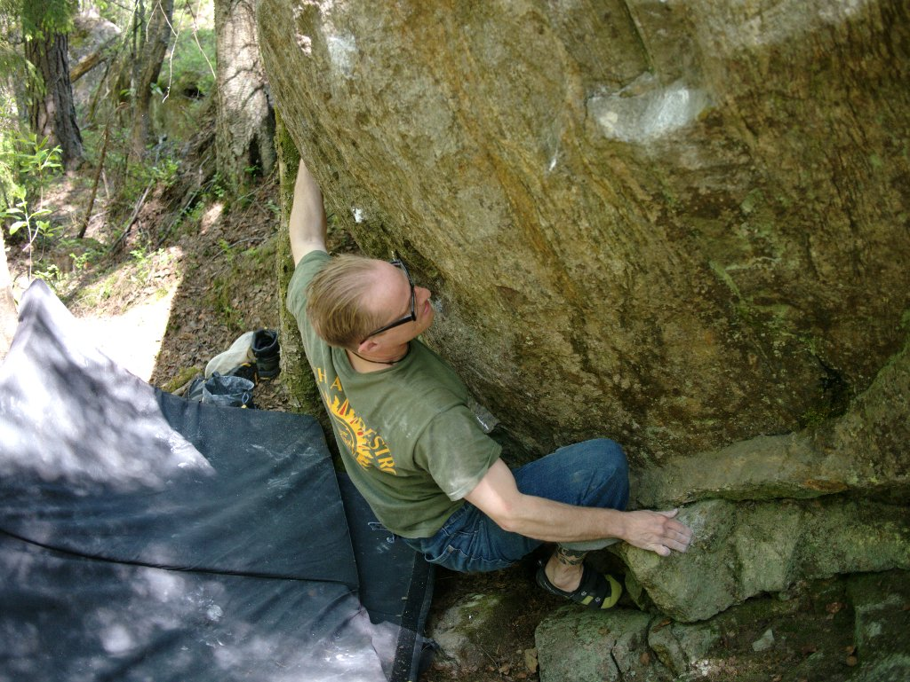
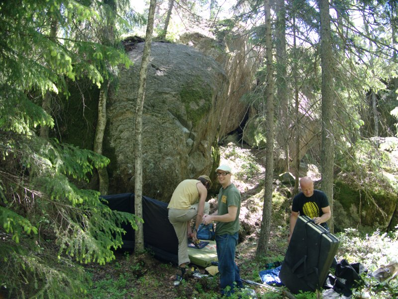
Vägsektorn 2
Lat: 59.20771
Long: 18.02616
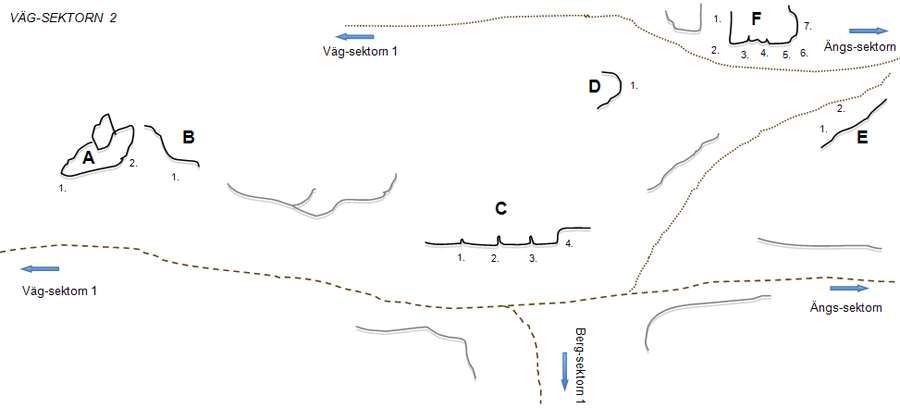
- A:1
- Whiskey route
- 6B+
- Hangeltravers till höger, följer hela kanten mot toppen. Händer och fötter endast på kanten.
-
- Variant
- 5+
- Använd hela väggen för fötterna, avslutar stående i startgreppet för ''Big bud''.
- A:2
- Big bud
- 6C+
- Få men tydliga grepp, fuska inte och använd överkantenpå stenen, avslutar på toppen.
- B:1
- Lurad
- 5+
- Klurigt mittparti, slutar i markant grepp ca 3 meter upp. Svårt att ta dig ned? Ring Poolia!
- C:1
- Snoken
- L
- Lättaste av de tre sprickorna, inget att säga.
- C:2
- Bönstjälken
- L
- Enkel spricka, upp i mossan.
- C:3
- Flicksländan
- L
- Enkel spricka, upp i mossan.
- C:4
- Myggpest
- 6B
- Överaskande ansträngande problem med hoptryckt start. Heelhook med vänster fot, båda händerna på samma grepp alt. HH i pocket, skicka höger hand till hyfsat grepp.
- D:1
- Pistvakt
- L
- Problemet högst upp, enkelt, lite dolt bakom ett buskage.
- E:1
- Nacho Gringo
- 6B+
- Klättra rakt upp, skicka VH till sloperlist.
- E:2
- Zorro
- 6C
- Klättra upp till spricka, ta krimppocket med VH, skicka höger till sloperhyllan, kliv till höger skicka upp till list.
- F:1
- Bye bye Mythos
- L
- Inklämt problem med tydliga lister.
- F:2
- Francos shelter
- 7C
- 3 Hårda moves, krimp, pinch, slopers och heel-hook. VH på vänstra kanten och HH i krimp, slappa med VH på den vänstra kanten...
- F:3
- Fistfuck
- 6C
- Klättra sprickan upp till vänster om "Snakefarm".
- F:4
- Snakefarm
- 7B+
- Tekniskt problem med body tension, klättra längs de vertikala kanterna upp till toppen.
- F:5
- Ballista
- 7A
- Crimpstart, går snett till vänster tills du når den första vertikala kanten på "Snakefarm". Klättra upp.
- F:6
- Balinesen
- 6C+
- Startar i samma grepp som "Ballista" men går rakt upp.
- F:7
- Barnkalas
- 5
- Problemet längst till höger.
Bergsektorn 1
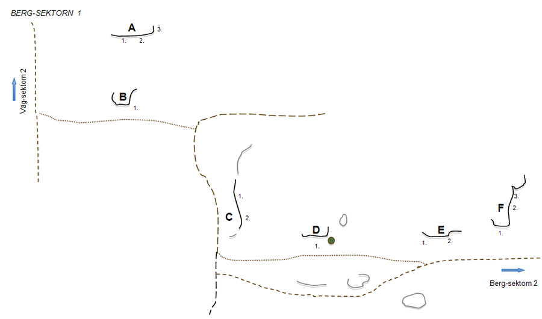
- A:1
- Svammel
- L
- Lätt sva-problem.
- A:2
- Svavel
- 6A
- Jobbig i starten sedan tydlig struktur.
- A:3
- Skräddaren
- 6A+
- Slopigt problem till vänster om ''Svavel''.
- B:1
- Hubbe
- 6A+
- Låg start i tydligt grepp med VH, HH i snedställd list. Antingen när man rest sig upp skickar man VH till vertikala sprickan eller den tydliga listen mitt på. Rampen till vänster är ej med.
- C:1
- Rulltrappan
- 5
- Startar i tydliga grepp, går på slutet till vänster på sva-partiet.
-
- Variant
- 5-
- Goda grepp, rakt upp. För mycket grepp på slutet gör klättringen dess värre mindre intressant.
- C:2
- Tsunami
- L
- Kul form på väggen!
- D:1
- Trollskott
- 6A
- Ihopträngt problem pga trädet, vilket sabbar det hela.Problemet går lite till höger, när man når högra kanten med HH klättra rakt upp.
- E:1
- Mutan
- 6A
- Starta till vänster och toppa ur vid sprickans högsta punkt.
- E:2
- Bakshish
- 6B
- Starta i listgrepp, skicka till slopig kant och sedan vidare till en mängd lister högre upp.
- F:1
- Knäskål
- 5
- Kylskåpsklättring rakt upp.
- F:2
- Jaha!
- L
- Rakt upp till mosskanten, inget att säga.
- F:3
- 19th hole
- 5
- Svårast i början, se upp för lösa flak!
Bergsektorn 2
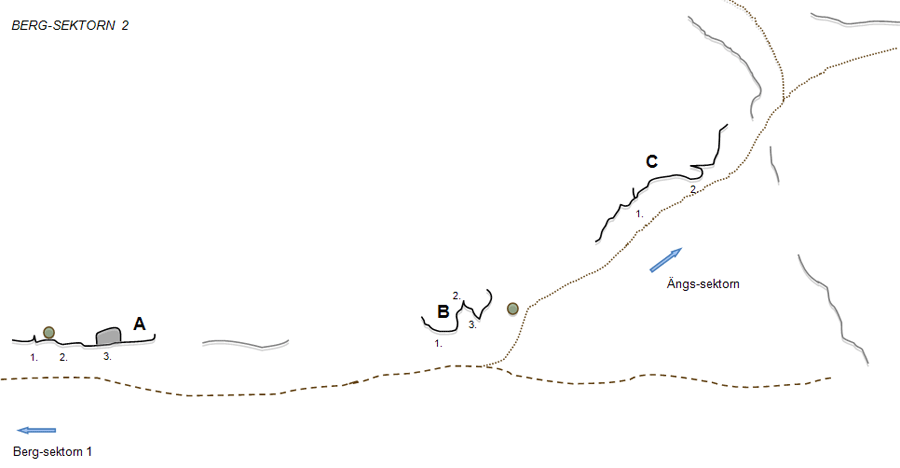
- A:1
- Hävert
- 5
- Startar med båda händer i sprickan och vänster fot i snedställd list.
- A:2
- Step up
- L
- Lätt klättring i skrovel/spricka, upp till höger om träd.
- A:3
- Predikstolen
- 6B+
- Klurigt mittparti, fina lister vid den högra sprickan.
- B:1
- Super judge
- 7A
- Krimpigt problem, få lister för fötterna.
- B:2
- Schäfern
- 5
- Använd endast sprickan för händerna.
- B:3
- Skarprättaren
- 6A
- Starta på den vänstra sidan av den vassa areten, klättra runt och upp till topps.
- C:1
- Barba mama
- 5+
- Följ sprickan till höger, toppa ut i ''Barba papa''.
- C:2
- Barba papa
- L
- Klättra på enklaste sätt upp för flaket.
Ovanför B och C är perfekta fikaplatser med milsvid utsikt.
Ängssektorn
Vill du gå direkt hit gör du det enklast genom att följa ängskanten från vägen.
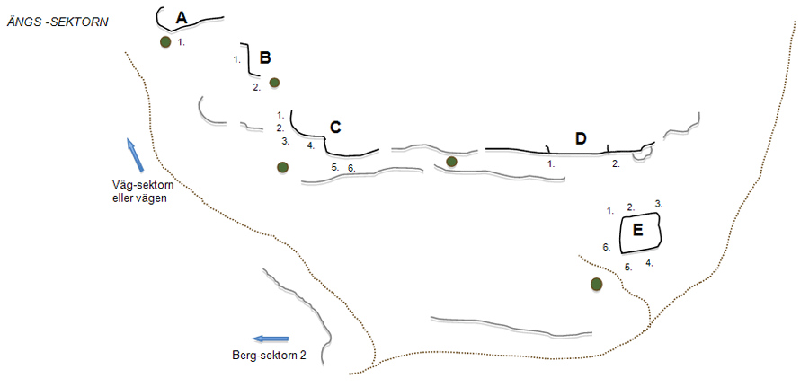
- A:1
- Moby's dick
- 6A+
- Travers till höger. Startar sittande i det stora tydliga greppet, gå upp över kanten på slutet.
- B:1
- 10 ft. Ganja Plant
- 5-
- Sva, wall-problem. Rakt upp!
- B:2
- Salmiak
- 5
- Stor och fin list att följa upp med HH.
- C:1
- Bunnylainen
- 7A
- Väggklättring till vänster om ''Sweet Johnny'', snedställda krimpiga fingergrepp en bit upp.
- C:3
- Sweet Mary Jane
- 6B+
- Fin klättring med start på kanten och upp mellan ''Bunnylainen'' och ''Sweet Johnny''
- C:3
- Sweet Johnny
- 6C
- Känslig klättring längs kanten på stenen. Projekt.
- C:4
- Uppfuckat
- 6B
- Highball som går med en liten dragning till vänster. Bitvis sparsmakat med goda grepp. Bra landning!
- C:5
- Doom
- 7A? project
- Sittstart i det stora flaket, går till vänster och upp på goda grepp till en bitvis mer känslig klättring. Projekt.
- C:6
- Power trip
- 7B? project
- Startar i samma flak som ''Doom'' men går i början till höger till slopig kant. När man får lite höjd märker man att det är en lååång resa ned till marken. Projekt.
- D:1
- Maräng
- L
- Lite av laybackklättring längs den vänstra kanten.
- D:2
- Sidvind
- 6C
- Startar till höger med VH i spricka. Klättra sedan till höger antingenvia lister på vägg eller ett långt skick till slopig kant med HH. Klättra sedan upp.
- E:1
- Grävling
- 5+
- Går längs den högra kanten och de goda listerna på väggen.
- E:2
- Badger
- 6A
- Gå rakt upp från listen utan att använda kanten.
- E:3
- Tick attack
- 5+
- Starta sittandes med VH på vänstra kanten och HH i list. Mata upp till ett bra pinchgrepp med VH och kliv upp.
- E:4
- Bulldozer
- 6C
- Låg start, går från höger till vänster längs kanten och avslutar med ''Pangnus''.
- E:5
- Dumper
- 6B
- Nästan rakt upp från startgrepp, jobba lite till vänster och upp.
- E:6
- Pangnus
- 6B
- Låg start, starta med båda händerna på den slopiga kanten, fotgrepp under stenen, skicka till spricklist, mata vidare till vänster och kliv upp.
Om man från E-blocket går mot vattnet och håller lite vänster, kommer man till en bastant sköld ca 15 meter hög. På skölden går en bultad tur.
- 1
- Suturbrandtur
- 7a
- Börjar i en spricklinje och övergår sedan i väggklättring.
Kvarnen
En naturskön sektor med lövskog, bad och grillplats. Mycket myggigt inne vid väggarna under sommarsäsongen. Flera höga och fina problem. Några så höga att de hittills bara är gjorda på topprep. Ett problem visade sig t.o.m. vara en gammal tradled. Oftast mycket bra landningar.
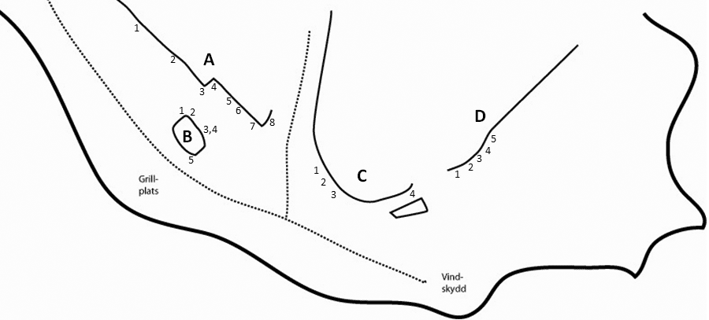
Höga väggen
- A:1
- Juicy Lucy
- L
- Den vänstra sprickan.
- A:2
- Juicier Lucifer
- 6B
- Högra sprickan. Tunt krux på slutet.
- A:3
- Den makalösa arêten
- 7b
- Den makalösa arêten! Endast gjord på topprep. Ledgradering.
- A:4
- Spagatdiedern
- 6/6+
- Diedret. Säkrad med små vajerkilar. Ledgradering.
- A:5
- I lagens tassemarker
- 5
- Starta strax till vänster om hyllan och ta dig upp på densamma. Toppa ur med ''Bailey’s'' eller hoppa ner.
- A:6a
- Vodka
- 5+
- Upp till hyllan
- A:6b
- Bailey's
- L
- Från hyllan via högerlutande spricka till kanten.
- A:6
- Christer Pettersson
- 5+
- A:6a + A:6b
- A:7
- My Knight In Shining Armour
- 6C
- Areten och kanten för vänstern. Ståstart 6B+.
- A:8
- The Knights Who Say Ni!
- L
- Slaben th om ''My Knight In Shining Armor''.
Blocket
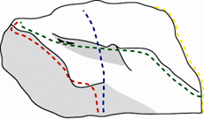
- B:1
- Billigast på Blocket
- L
- Följ kanten. Gul linje.
- B:2
- P.O.K.
- 5+
- Följ linjen hela vägen åt v runt hörnet. ”Ögonhålen” ingår. Grön linje.
- B:3
- I befintligt skick
- 5
- Samma startgrepp som ''Först till kvarn'' men gå rakt upp. Blå linje.
- B:5
- B.V.S.A.
- 6C
- Ett enda flytt.
Högra väggarna
Problem nr C:1 - C:3 kan avslutas när man står i övre tvärsprickan. Den som vill ha mer klättring än så kan toppa ur via en lätt men hög slab.
- C:1
- Mygga
- 6A
- Startgrepp i undre tvärsprickan och rakt upp.
- C:2
- Sketolene
- 6C
- Svårt att nå startgreppen om man är kort.
- C:3
- Autan
- 5
- Följ sprickorna snett upp åt v.
- C:4
- 神風 (Kamikaze)
- 6B+
- Klurig liten arete. Följ sprickan snett upp åt v.
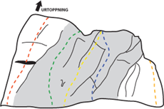
- D:1
- En midvinternattsdröm
- 7A+
- Genom det lilla taket. Röd linje.
- D:2
- Innan regnet faller
- 7A+
- Upp längs sprickantydningen. Ståstart 6C+. Grön linje.
- D:3
- Vit voodoo
- 6C
- Start i jugen med vänster hand och följ sprickan snett upp åt h. Ståstart 6B. Gul linje.
- D:4
- Svart magi
- 6C
- Upp via stora greppet th och in i samma utsteg som ''Vit vodoo''. Blå linje.
- D:5
- Oktarin
- 5
- Håll händer och fötter innanför sprickan som avgränsar blocket. Slutar när du står på hyllan. Orange linje.
- D:6
- Tobbe trollkarl
- 6a
- Följ väggen ca 20 m ytterligare till höger för att hitta problemet. Börja lågt till vänster, följ stor spricklinje via skålen till jättejugge.
Kategori:Stockholm